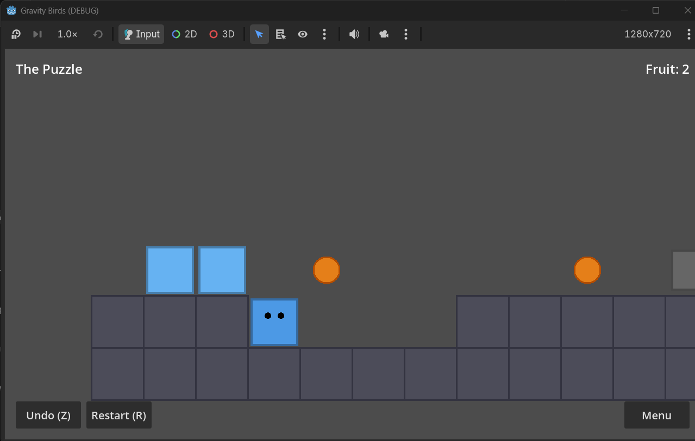
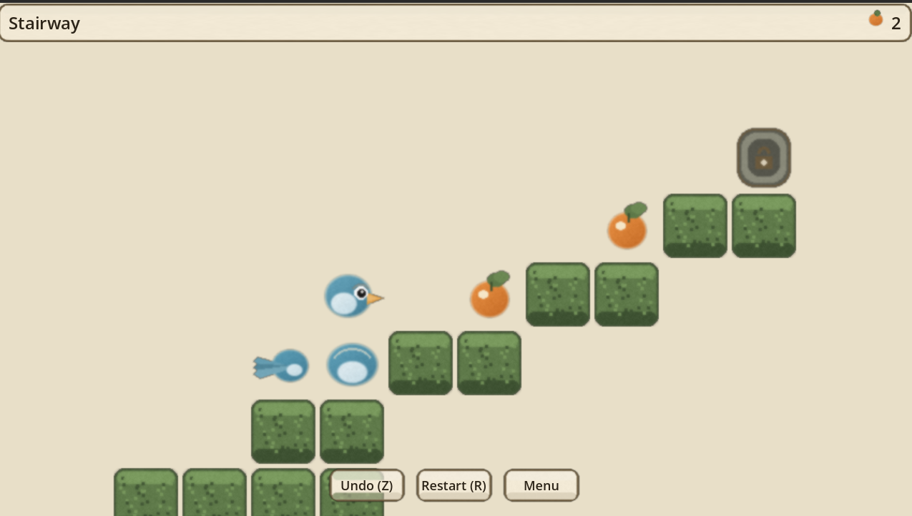

Grok Bot team · Cursor Cloud Agent · warts and all
Plain account of how an autonomous bot team plus a Cursor Cloud Agent produced a Snakebird-like Godot puzzle game, where the files actually lived, and why “it’s in Cursor” did not mean “I can see it on This PC.”
You wanted an original puzzle game in the spirit of Snakebird: grid-based, multi-segment creature, gravity after moves, fruit that grows the body, exit after collecting fruit, undo/restart — inspired by, not a clone of commercial IP.
Constraints that shaped the run:
The working title that landed was Gravity Birds. The Grok Bot team treated that as the product name; the remote repo Cursor spun up did not use that name (more on that below).
The greenfield cast was three specialists. Others on the wider roster were idle for that first ship. Every name below is a Grok Bot — a separate assistant in the Grok Bot app — not a third-party coding product. A later brownfield polish phase brought Frank in (see §13).
Name collision: “Devin” here means the Grok Bot labeled Development. It is unrelated to Cognition’s agent product also called Devin. Same spelling, different system.
Took the ask, confirmed platform with you, dispatched specialists, relayed specs between bots and the cloud agent, and reported status back. Did not write Godot code.
Not Cognition’s “Devin” product. This Devin is a Grok Bot teammate
(sidebar label Development) on the same Grok Bot roster as Chief and Rex.
Owned the Cursor Cloud Agent launch, Origin new_repo path, oversight of the Godot build,
and later the GitHub re-home plus clone onto the laptop under Downloads.
Built a Snakebird-inspired mechanics checklist from public sources (design patterns only — no IP theft). That checklist was injected into the cloud agent mid-run so simulation order and rules stayed coherent.
Stuart, Bess, and other roster bots were not on the greenfield ship. If you only hear three names for the first Gravity Birds build, that is intentional — not a missing handoff.
Frank (Frontend) joined later for the Moss Ledger brownfield art & UI polish (§13) — design only on that run; Devin still implemented in Godot.
Tess Tester (QA) was created after the greenfield ship for future E2E / playtest loops. She was not on the Moss Ledger polish run.
The constraint was satisfied by launching a Cursor Cloud Agent against a new Origin repository. That is a valid Cursor path. It is not the only one.
Also would have counted: creating a local folder, opening it in the local Cursor IDE, and building there. “Must use Cursor” ≠ “must use Origin cloud agents.” The team picked the cloud path because it could scaffold a full Godot tree without Godot installed on your machine yet.
After a short platform check with you, the team settled on Godot 4 (target 4.3, GDScript). Reasons that mattered in practice: free, open, good for 2D grid puzzles, easy to open later on a laptop, no Unity license dance.
Important context: you did not have Godot installed yet when the cloud agent ran. So the first playable artifact lived in a remote repo and a remote agent workspace — not in a folder you could double-click. Editor play (F5) only becomes real after install + clone + Import.
Devin (the Grok Bot) launched a Cloud Agent with new_repo (private Origin). Cursor auto-named the repo something like
tmp-… — not “Snakebird” and not “Gravity Birds.” That naming choice is a recurring source of “where did it go?”
project.godot, scenes, scripts, level resources).
Agent sessions show up under URLs shaped like cursor.com/agents/bc-….
The Origin codebase itself is a different surface (cursor.com/codebase/…). Neither magically appears as a row under local Cursor “home” until you clone.
This is the section that usually gets papered over in “we shipped a game” writeups. Most of the frustration was not Godot — it was where state lives and what words like Cursor / Origin / Agents actually point at.
Cloud Agent writes into an Origin-hosted git remote and a remote workspace. Your laptop’s disk is empty of that project until someone clones it. Local Cursor’s home / recent list only shows local folders you have opened. No clone → nothing to list.
Searching the UI or your memory for “Snakebird” or “Gravity Birds” will miss a repo named like tmp-….
The product name and the remote name were never the same string.
If you open the desktop IDE and look for a big Agents tab on the welcome screen, you may not find one.
Practical paths: open cursor.com/codebase or the agent URL (cursor.com/agents/bc-…) in a browser while signed in.
There is no ambient sync that materializes Origin files into the IDE. Clone (or download) is the bridge. Until then, local Cursor and Origin are strangers.
Alternative that also satisfied the constraint: empty folder under Projects → Open Folder in local Cursor → build there. The team chose cloud for bootstrap speed without a local Godot install; that choice created the visibility gap.
When re-homing off Origin, creating a public GitHub repo with a personal access token can fail with 403
even though creating a private repo with the same token succeeds. Scope / org policy / default visibility — whatever the root cause,
the workable path was private gravity-birds.
origin auth login
Pushing or pulling Origin over HTTPS with a generic token can fail until Cursor’s Origin auth flow is happy
(origin auth login or equivalent). The practical workaround used here: reconstruct / push the tree to GitHub,
then clone GitHub onto the laptop. Origin remained the birthplace; GitHub became the laptop-friendly home.
An export/ tree (or partial export) can exist while the browser build is missing critical artifacts
(.wasm, .pck, etc.). Opening HTML then fails; Godot editor F5 still works.
Do not treat “export folder present” as “web build ships.”
Rex’s checklist and the agent prompt both insisted: no commercial Snakebird assets, levels, characters, or trademarks. Gravity Birds is an original grid-gravity snake-creature puzzle with its own name and levels.
Chronological, condensed — the path the bots actually took:
new_repo (private, auto-named tmp-…).
az9713/grokbot-gravity-bird (earlier private-create path succeeded where public 403’d; public name above is the playable home).
<UserProfile>\Downloads\gravity-birds; open via File → Open Folder (Cursor and/or Godot Import).
scripts/puzzle_game.gd fixed via Cursor Cloud Agent; squash-merged to GitHub az9713/grokbot-gravity-bird as PR #1 (main ~ ae68b46); also landed on Origin as 38d83fa.
c8881f5 on GitHub main); levels synced to Origin main as 990a412; level files copied to the laptop Downloads clone.
This section demystifies inter-GrokBot messaging during the Gravity Birds job — who pinged whom, what “priority” means, and why specialist replies often show up in Chief’s chat.
priority=true wakes the other bot now for work someone is waiting on.
priority=false is FYI held until their next turn.
What this is not
Chronological, paraphrased, scrubbed. Short quotes in blockquotes where useful. Intent column = why the message was sent.
| From → To | Intent | What was said (paraphrase) |
|---|---|---|
| You → Chief | Kickoff | Build a Snakebird-like puzzle; must use Cursor; ask clarifying questions before coding. |
| Chief → Devin | Dispatch build |
Godot 4; Cursor Cloud Agent with Origin new_repo; original mechanics; 5 levels; HTML5 path.
Do not wait on perfection — start the agent.
|
| Chief → Rex | Research brief | Short Snakebird-inspired mechanics checklist for Devin’s CloudAgent prompt; public sources only; no IP theft. |
| Rex → Chief | Deliverable | Paste-ready checklist: grid, gravity, fruit growth, exit, undo, and sim order move → pushes → grow → gravity → hazards. |
| Chief → Devin | Lock spec | Inject Rex’s checklist into the running Cloud Agent via interrupt reply; treat it as the locked v1 spec. |
| Devin → Chief | Ack |
Confirmed checklist landed in Cloud Agent bc-…. Spec locked.
|
| Devin → Chief | Ship report |
|
| You ↔ Chief | Clarify + next ask | You were confused: Origin vs local Cursor. Chief explained the remote-vs-disk gap. You asked for a clone to the laptop plus a GitHub re-home. |
| Chief → Devin | Re-home | Clone Origin to the laptop Downloads path; create/push a GitHub repo (try public; private OK if public create 403s). |
| Devin → Chief | Re-home result |
Local path ready; GitHub went private then public as grokbot-gravity-bird.
Origin git auth failed, so reconstruct/push GitHub then pull the laptop.
Web export binaries still missing.
|
| Devin → Chief | Post-ship status |
Playtested; found Issues A (movement dead) and B (levels 2–5 unwinnable).
Opened Cloud Agents / PRs; later sent demystify notes
(symptom / cause / fix / verify) plus a remote SHA table including
PR #2
then merge c8881f5 / Origin 990a412.
|
| Chief → Devin | Doc sync | Push journey HTML updates to Origin while Chief pushes GitHub from the laptop. Devin confirmed Origin SHAs afterward. |
Takeaway: You talked to Chief. Chief woke Devin and Rex when needed. Devin steered Cloud Agents. Replies bubbled back through Chief so you could see progress without living inside every specialist tool call.
After the first shippable slice was re-homed and opened in Godot, Devin (Grok Bot / Development — again: not Cognition’s product) playtested on the shared computer and hit two hard blockers. Neither was invented for this writeup; both were fixed with Cursor Cloud Agents and PRs.
execute_move() built an untyped Array, then assigned it into
creature_segments: Array[Vector2i] → runtime error, move aborted. The same class of risk existed on undo/restart restores.Array[Vector2i] construction / .assign() in scripts/puzzle_game.gd.Not Issue A: Up / Down blocked at the First Steps start is intentional (neck / floor). Only left–right deadness was the bug.
level_02..level_05.tres; every attempted move was neck reverse or wall.
Level 01 was fine (head on EMPTY).level_02–05 so heads sit on EMPTY; themes kept. BFS-validated against engine order
move → fruit → gravity → grow → hazards.Example solutions (layouts matching the GitHub PR):
| Level | Solution (U/D/L/R) |
|---|---|
| L1 First Steps | RRRURRR |
| L2 Gap | RRURRURRR |
| L3 Stairway | LURURRURRURRURR |
| L4 Danger Zone | RRUURRRURLURR |
| L5 The Puzzle | RRURRRURRRRR |
Honest map of remotes after PR #2 landed on GitHub main:
| Remote | What | Ref |
|---|---|---|
GitHub az9713/grokbot-gravity-bird |
Movement fix merged (squash PR #1) | main ~ ae68b46 |
| GitHub | Levels 2–5 redesign | Squash-merged PR #2 → main c8881f5
(PR #2) |
Origin az9713/tmp-98639729b424a5bb |
Movement fix | 38d83fa |
| Origin | Levels 2–5 sync | 990a412 on main |
Wart: Origin levels bytes may differ slightly from the GitHub PR #2 layouts (Cloud Agent recreated both).
Both aim for empty-head + solvable. The laptop
<UserProfile>\Downloads\gravity-birds clone has the movement patch plus PR-branch levels —
after the merge, the laptop clone was fast-forwarded to GitHub main c8881f5.
Where the playable tree lives after re-home (see also post-ship fixes above):
| Surface | Where |
|---|---|
| Canonical laptop clone | <UserProfile>\Downloads\gravity-birds |
| GitHub remote | github.com/az9713/grokbot-gravity-bird (public repo name; playable home) |
| Birth remote | Origin az9713/tmp-98639729b424a5bb (optional to keep; not required to play) |
In Cursor: File → Open Folder on the Downloads clone.
In Godot: Import → select project.godot in that same folder.
project.godot from <UserProfile>\Downloads\gravity-birds.
Prefer editor play over the web export until you have verified a full HTML5 export (templates installed, .wasm / .pck present, served over http://localhost, not file://).
After the greenfield ship was playable, the human ask shifted: the game felt too simple in graphics and UI. Polish the art and chrome on current rules only. Snakebird remained an aesthetic mood reference (cozy painted readability) — not an IP copy of art, levels, or characters.
The Godot project was already playable with five levels and locked simulation order (move → gravity → fruit grow → spikes/void soft-undo → exit after all fruit). The job was to add visuals without changing mechanics or level rules.
Scoped the polish, briefed Frank, told Devin to implement with no rules change, later added README before/after screenshots.
Designed the Moss Ledger look, palette, HUD plaques, and drop-in asset pack under assets/art/.
Wired textures into _draw + HUD; kept the same five levels and rules; shipped the integrate commit on GitHub main.
Exists for future E2E / playtest loops. No Tess verification is claimed for Moss Ledger.
Starting point was Godot DEBUG geometry: slate rects for tiles, blue square body segments with eye dots, orange circles for fruit, gray/green exit. Mood target: Snakebird’s cozy painted readability — soft tiles, chubby silhouette, warm UI — feeling only.
He drew original sprites with Pillow under the style name Moss Ledger.
Delivered under assets/art/: ART_BRIEF.md, HUD_MOCK.md,
64px tiles/actors, ui_button / ui_panel / fruit_icon, optional atlas.
Drop-in contract for Devin: draw_texture at cell * 64, keep the existing
TileType enum, set ClearColor to parchment.
Wired the textures into _draw and the HUD. Same five levels. Same rules
(move → gravity → fruit grow → spikes/void soft-undo → exit after all fruit).
GitHub main squash/commit 88ed6f0 — Integrate Moss Ledger art polish.
game_ui_1.png (pre-polish DEBUG) and game_ui_2.png (Moss Ledger) are linked in the README.
Screenshot commit on GitHub main: a61ae6b.

game_ui_1.png)
game_ui_2.png)
Same async pattern as the greenfield run: SendToAgent — one Grok Bot sends; the other gets a later turn
(priority=true wakes them now; priority=false is FYI for their next turn).
| From → To | Intent | What was said (paraphrase) |
|---|---|---|
| Chief → Frank | Design brief | Polish art/UI only; current rules locked; Snakebird as mood reference, not IP; deliver a drop-in pack. |
| Frank → Devin | Art handoff | Moss Ledger pack under assets/art/ plus ART_BRIEF / HUD_MOCK; cell size 64; keep TileType. |
| Chief → Devin | Implement | Wire textures into draw/HUD; no mechanics or level-rule changes; ship on GitHub main. |
| Devin | Ship | Integrate commit 88ed6f0 on GitHub main. |
| Chief | Docs proof | Later added README before/after screenshots (a61ae6b) so readers can see the polish. |
main c8881f5 (squash of
PR #2) and Origin 990a412 both fix levels 2–5,
but layouts may differ slightly — cite the remote you are playing from..wasm / .pck.az9713/tmp-98639729b424a5bb and az9713/grokbot-gravity-bird); day-to-day work should use the GitHub remote you can clone and push without Origin auth friction — GitHub main now includes the levels squash c8881f5.main 88ed6f0;
before/after README screenshots on a61ae6b. Remaining gaps: HTML5 export still incomplete;
Tess E2E was not run on this polish.tmp-… name, and agent bc-… id are three different strings — bookmark the ones you care about.new_repo and push.
Lives in the cloud; not a folder on This PC until cloned elsewhere.
cursor.com/agents/bc-…).
Writes remotely; does not auto-mount into the local IDE.
priority=true wakes them now; priority=false is FYI for their next turn.
main 88ed6f0.